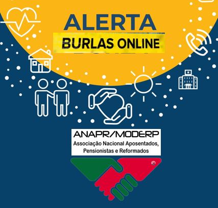
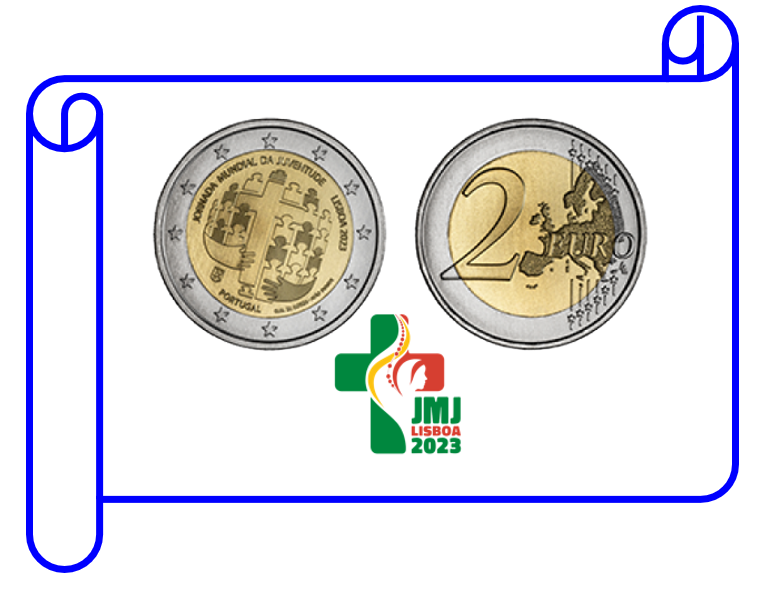
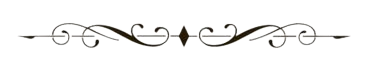
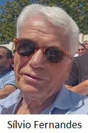

ANARP/MODERP Newsletter nº 0 - Julho de 2023
Presidente
Luís Antunes
+SINDICATO
1º Vice-Presidente
Florbela Ribeiro
Professora
2º Vice-Presidente
Vítor Silva
SINTAP
1º Secretário
Vanda Madeira
SINAPE
2º Secretário
António Carrasco da Cruz
Presidente
José Manuel Graça
SINDEL

1º Vice-Presidente
Firmino Marques
SBN
2º Vice-Presidente
Carlos Almeida
SOJ
Tesoureiro
Manuel Diniz
SINTAP
1º Secretário
José Luís Resende
+SINDICATO
2º Secretário
José Luís Milício
+SINDICATO
3º Secretário
Clarisse Santos
SMAV
Vogal
Bruno Rebelo
Gestor de Recursos Humanos
Vogal
José Alves da Silva
CENJOR
Vogal
Eduardo Santos
Informático
Vogal
Nuno Félix
SINTAP
Vogal
José Ricardo
ANPC
Assessor à Direção
Amadeu Paiva
+SINDICATO
Assessor à Direção
Olga Branco
SINTAP
Assessor à Direção
Maria de Fátima Felgueiras
Assessor à Direção
Teresa Seabra
+SINDICATO
Presidente
José Oliveira Dias
DOP
Vice-Presidente
José Pinto da Costa
1º Vogal
Isabel Soares
SINTAP
2º Vogal
António Manuel dos Santos
SINDEL
A ANAPR-MODERP - Associação Nacional de Aposentados, Pensionistas e Reformados, foi constituída por escritura pública em 19 de fevereiro de 1992, reconhecida como IPSS e pessoa coletiva de utilidade pública pela publicação no DR nº 113, III série, de 16 de maio de 1995. A ANAPR/MODERP, enquanto IPSS, deriva do MODERP - Movimento Democrático de Reformados e Pensionistas, criado a 26 de outubro de 1986.
A ANAPR-MODERP, como IPSS outorgada pelo DL 245/1995, III Série, é conselheira eleita e efetiva em vários Organismos Públicos e Comissões Sociais nas quais, com responsabilidade, protege os cidadãos mais idosos sendo o garante de uma Voz na sua defesa, reivindicações de criação de melhores condições para quem já muito contribuiu para a sociedade Portuguesa e quer continuar a ser um parceiro Ativo.
Somos uma organização que se rege pelos princípios democráticos, tendo sempre prestado contas públicas dos seus atos, ao longo dos seus vários mandatos.
A ANAPR-MODERP tem âmbito Nacional com Delegações abertas em Viseu, Figueira da Foz, Cascais/Oeiras, Barreiro (Margem Sul), Coimbra e Porto, para além da sede na cidade de Lisboa. Temos como finalidade a solidariedade e a ação social que pretende contribuir para a promoção e a evidência de que o envelhecimento e a longevidade ativa são a extensão natural de cada um de nós, devendo ser vividos em condições de autonomia, saúde e bem-estar. Apesar de interrompidas as abordagens efetuadas decorrentes do período pandémico, estima-se haver condições para a abertura de novas Delegações em cidades como as de Bragança, Faro, Santarém, Castelo Branco e Guarda. Essa é a nossa principal tarefa e a nossa principal resiliência.
Caros Associados, Amigos e Leitores.
É com grande satisfação e entusiasmo que trazemos a vocês o primeiro número da nossa Newsletter. É nosso objetivo de, através desta forma de comunicação acessível, informativa e inspiradora, mantê-los atualizados sobre os acontecimentos mais relevantes na nossa comunidade e no mundo.
Esta Newsletter é uma responsabilidade dos Órgãos Eleitos, em cada mandato. É um espaço para informar, para contactar e para propor ideias que projetem um futuro saudável para a longevidade conquistada. É com este desiderato que divulgamos, a partir de hoje e com uma periodicidade inicial bimestral - evoluindo para uma publicação mensal, logo que possível - que se traz à estampa a Newsletter número 0 da ANAPR - Associação Nacional de Aposentados Pensionistas e Reformados / MODERP - Movimento Democrático de Reformados e Pensionistas onde, verdadeiramente, todos contam.
Nas Newsletters iremos abordar uma variedade de tópicos que impactam com todos nós. Queremos ser uma fonte confiável e imparcial de informações, oferecendo uma visão abrangente e aprofundada dos eventos que moldam o nosso mundo atual. Além disso, também destacaremos histórias e entrevistas inspiradoras, eventos culturais, passatempos e iniciativas comunitárias que merecem ser conhecidas e celebradas. Acima de tudo que nos informem e divirtam.
Acreditamos que a informação é uma ferramenta poderosa que pode capacitar as pessoas, ajudando-as a tomar decisões fundadas, motivando-as a envolverem-se ativamente na sociedade. Com isso em mente, faremos o possível para apresentar conteúdos úteis, garantindo a qualidade e a veracidade das informações que compartilhamos.
A nossa Newsletter será um espaço aberto para a diversidade de opiniões. Acreditamos na importância do diálogo construtivo e no respeito mútuo e, portanto, encorajamos os nossos leitores a participarem ativamente, compartilhando as suas perspetivas, assim contribuindo para um debate saudável e enriquecedor.
Esperamos que este primeiro número seja o início de uma longa e frutífera jornada. Lembrem-se de que as suas sugestões, comentários e críticas construtivas são sempre bem-vindos. Juntos construiremos uma ferramenta valiosa para a nossa comunidade, sendo esta Newsletter um canal privilegiado para e com todos.
Aproveitem a leitura e sejam bem-vindos ao nosso Boletim Informativo!
O Presidente da Direção Nacional da ANAPR/MODERP
José Manuel Graça
Recebeu um SMS a pedir ou a exigir um pagamento em atraso?
Recebeu uma chamada desconhecida?
COMO ACONTECEM AS FRAUDES?
Os novos piratas já não andam à descoberta de novos mundos, mas sim - por via das novas tecnologias - a fazem-se passar por entidades credíveis e conhecidas de todos nós, como é o caso dos CTT, EDP e de várias entidades bancárias enviando e-mails, ou mensagens telefónicas (SMS) com o objetivo de a acederem aos nossos dados bancários e retirarem dinheiro.
PORQUE CRESCEM ESTAS BURLAS?
Antes de mais, pense bem se contratou com a empresa uma encomenda, ou se vale a pena receber um prémio de que não estava à espera. O phishing (pesca na sigla inglesa) é uma dessas técnicas. O objetivo maior é sempre aceder aos seus dados bancários para conseguirem movimentar a sua conta ... com a sua colaboração (involuntária)!
QUAIS OS TIPOS DE MSGs MAIS USADAS?
No caso das empresas de entrega, como por exemplo os CTT, os clientes recebem SMS ou e-mails em nome da empresa que os leva a pagar uma taxa para que a encomenda seja recebida. No caso das empresas de Eletricidade, Gaz, Água, Telecomunicações, a técnica utilizada é a de afirmarem que há pagamentos em dívida e que deve regularizá-los, sob pena de ficar sem o serviço contratado.
O QUE DEVE FAZER PARA NÃO SER VíTIMA?
Nos exemplos dados em relação a identidades falsas dos bancos, o cliente NUNCA DEVE fazer atualizações, nem validar códigos, nem inserir passwords que lhe são pedidas.
Os bancos nunca pedem este tipo de dados, por estas vias. Em caso de dúvida, não pague e contacte o banco que lhe está a pedir essas atualizações, de forma telefónica alternativa ou pessoalmente.
A partir do dia 19 entrou em circulação uma nova moeda de 2€ para comemorar a Jornada Mundial da Juventude 2023, que decorrerá em Lisboa, entre os dias 1 e 6 de agosto. De acordo com o Diário da República a emissão autorizada das moedas da JMJ 2023, não pode ultrapassar os 2,03 milhões de euros.
Das suas caraterísticas destacam-se a cruz peregrina no campo central e um conjunto de figuras simbolizando a multietnicidade dos jovens na jornada. Na parte inferior, haverá duas mãos a envolver o conjunto, representando o acolhimento do Papa, a inclusão e universalidade do encontro.
Linha gratuita: 800 209 899 (21h-24h)
Telefones:
213 544 545 - 912 802 669 - 963 524 660
Horário: todos os dias das 16h às 24h. Chamada com custos associados.
Linha de conversação, de prevenção do suicídio, e de prestar apoio
emocional a quem se encontra em sofrimento.
Linha Nacional de Emergência Social
Linha gratuita: 144
Horário: todos os dias, 24h por dia.
Linha gratuita: 808 24 24 24
Horário: todos os dias, 24h por dia.
Serviço: responde às necessidades manifestadas pelos cidadãos em
matéria de saúde.
Linha gratuita: 112
Horário: todos os dias, 24h por dia.
Serviço: atende em qualquer emergência que necessite de
uma ambulância, de bombeiros ou da polícia.
Linha gratuita: 800 20 35 31
Horário: dias úteis, das 9:30h às 17:30h
Vocacionada para os problemas da população com uma idade mais
avançada, prestando informações sobre os direitos e apoios.
Telefone: 300 502 502 - 210 545 400
Horário: dias úteis, das 9h às 18h
Serviço: informações acerca de assistência família, encerramento
de escolas, incapacidade temporária para o trabalho, prestações
sociais e familiares, entre outras.
Linha gratuita: 116 006
Horário: dias úteis, das 8h às 22h
Serviço: informação a vítimas de violência doméstica.
Todas estas linhas são de duplo anonimato,
garantido tanto a quem liga como a quem atende.
Para encaminhamento, a linha do SNS24 808 24 24 24 é
assumida por profissionais de saúde.
O esgotamento pelo calor ocorre em consequência da exposição a períodos de calor intenso, durante tempos longos e quando um indivíduo transpira abundantemente e perde muitos fluidos.
Para evitar o calor há que tomar precauções tão básicas como:
Sinais e sintomas de um esgotamento pelo calor:
Perante um esgotamento, o que fazer?
Lembro-me (por entreposta memória) perfeitamente do primeiro número que aprendi. Foi o 1. Anda não tinha 2 anos de idade quando isso aconteceu.
Foi uma festa, disseram-me que, toda a família que me rodeava, celebrou o facto efusiva e entusiasticamente. Finalmente, o menino que eu era, já sabia dizer 1 [e até apontava o indicador, como lhe tinham ensinado (olhem se fosse o médio, que bronca!), para sublinhar a afirmação perentória sobre o conhecimento que tinha da idade que tinha] e, portanto, estava preparado para ser o primeiro.
E quem é que (ou o que é que) não gosta de ser o primeiro, seja no que for (desde que não seja naquelas coisas desagradáveis que aqui omitirei desde já porque não faz sentido estar a estragar a festa)?
Este é o primeiro Boletim (podem chamar-lhe Newsletter; para mim será sempre Boletim) do MODERP ou da ANAPR, ou seja, de ambos. Não vem ao caso. Ou vem?
O que vem ao caso, é relevar o papel da Comunicação.
Nas Organizações e entre as Pessoas que fazem parte delas. Entre as Organizações e a Sociedade. Em todas as Entidades com as quais as Organizações se relacionam e interagem.
Não me parece que haja, no contexto do lançamento deste Boletim, maior ambição do que evidenciar a importância da Comunicação e o estar mais próximo dos associados.
Mas - não sendo Juiz ou Júri do que quer que seja - deixo no ar a expectativa de que consigamos manter na ANAPR/MODERP este meio de Comunicação. E fazê-lo o mais rico possível, com temas que toquem um espetro o mais alargado possível dos interesses dos nossos membros, associados, leitores enfim.
Isso tudo, mas não só.
Porque não estamos, como deixei implícito lá mais atrás, isolados. E, afinal, comunicar é Viver.
Comuniquemos, perdão, Vivamos, então. E vice-versa.
Ou seja, vamos fazer o que fez o menino que eu fui, sujeito que fiquei - após o pronunciamento do número zero ou do 1º - mãos ao trabalho militante e afincado, imposto pela Família, para que se pronunciasse [agora talvez já entendendo o significado intrínseco da quantidade (ou bipolaridade?)] para o 2º e, depois, para o 3º e ... por aí adiante, porque “para trás mija a burra”!
Não valerá a pena explicar ao público a que me dirijo que tudo o que se começa é para continuar.
Querer é poder (mais coisa, menos coisa).
Ok? Venha então o próximo número.
Até breve!
O 2º Secretário do Conselho Fiscal da ANAPR/MODERP
António Manuel dos Santos
Souto da Casa, Fundão
BREVES
O nosso membro da Direção Nacional Bruno Rebelo publicou o artigo "Modos de Relação com a Reforma", que foi publicado na “Revista Sociologia” editada pelo CIES-ISCTE. Pode aceder através da ligação acima.
Este artigo segue-se a outros já publicados sobre a problemática em que a centralidade do trabalho e o aumento da longevidade humana contribuem para uma necessária a reforma que permita comportar estas novas realidades. Relevamos aqui o título da sua tese de doutoramento em Sociologia, apresentada em fevereiro de 2021, no ISCTE, e titulada "Reformados e modos de relação com a reforma". A seu tempo e com autorização do próprio, esperamos vir a publicar partes desta oportuna tese.

EM AGENDA
Premio Drª Maria Raquel Ribeiro-2023
Vai acontecer a 12ª edição do Prémio Nacional "Dr.ª Maria Raquel Ribeiro", criado em 2012 pela Associação Portuguesa de Psicogerontologia - APP IPSS, com o apoio da Santa Casa da Misericórdia de Lisboa e da Fundação Montepio. As onze edições anteriores, constituíram eventos de grande qualidade, dignidade e humanidade, distinguindo pessoas com 80 ou mais anos de idade, que mantêm atividade e participação de relevo na sociedade portuguesa e que, em cada área de ação contribuíram para a dignificação do Envelhecimento Ativo, constituindo exemplos para a nossa sociedade.
Recordamos que, já no ido ano de 2016 o nosso anterior Presidente Manuel Jerónimo, foi uma das personalidades distinguidas nesse ano, na área da "Intervenção Social".
Eventos gastronómicos
Em breve levaremos a efeito a realização de novas confraternizações à volta de uma ação denominada de "Almoços temáticos" e que serão confecionados por alguém já na situação de reformado e aposentado. Será a oportunidade de se darem a conhecer dotes pessoais e uma gastronomia variada assim como as muitas histórias que o principal “Chef” em cada evento terá para nos contar.
Desde já aceitamos inscrições para os eventos, seja do lado de cá de mesa ou do lado de lá, de avental ao pescoço!

Esta nossa nova Newsletter (recordamos que já nos idos anos 90 o MODERP havia iniciado a publicação de um Boletim titulado "UNIR") não poderia deixar de referir uma iniciativa promovida pela nossa Delegação de Viseu por iniciativa do seu atual Presidente, Sílvio Fernandes, hoje com 84 recomendáveis anos.
Nesses idos anos 90, em parceria inicial com a Junta de Freguesia de Viseu e a GNR foi encetado o projeto pioneiro que consistiu na identificação e acompanhamento das pessoas mais isoladas em lugares e aldeias remotas daquele pedaço Portugal e que hoje, felizmente, se replica por quase todo país com a colaboração das forças de segurança.
Voltaremos a recordar aqui algumas das ações mais marcantes desta e de outras nossas Delegações, mas hoje, que melhor testemunho poderíamos trazer que o do próprio Presidente da Câmara Municipal de Viseu Dr. Fernando Ruas que o escreveu para a nossa Newsletter de estreia.
Presidente da Câmara Municipal de Viseu
Dr. Fernando Ruas
Um território como este, que os Viseenses me têm dado a honra de liderar, só se consegue afirmar se conseguir criar sinergias com as pessoas e com as associações.
A boa colaboração com estas diversas entidades que, numa união de esforços, desenvolvem um trabalho notável em prol do desenvolvimento do concelho e da qualidade de vida da comunidade, nas suas diversas áreas de atuação, tem sido a base da concretização de um desenvolvimento sustentável, que tem culminado na designação da melhor cidade para se viver em Portugal.
É nessa dinâmica local de parceria e colaboração que recordo, com estima, o nascimento da Associação Nacional dos Aposentados, Pensionistas e Reformados (ANARP - MODERP) em Viseu.
Recordo, nesse momento inicial de criação, já no longínquo ano de 2003, os nobres objetivos da associação que procurava dar condições para um envelhecimento ativo, com qualidade e com dignidade.
Foi, logo aí que, em perfeita harmonia com os princípios que o Sr. Sílvio Fernandes me apresentava, percebi que iriam ser um elemento essencial para colaborar na vontade que tínhamos de cada vez mais criarmos um território atento, funcional e coeso.
É importante que a sociedade através do movimento associativo consiga dar resposta a algumas lacunas na garantia de subsistência, saúde, segurança e dignidade a quem muito já contribuiu.
São pessoas como o Sílvio Fernandes e os restantes órgãos diretivos que têm sido o apoio para quem precisa, ajudando e colaborando com o seu trabalho.
É também por isso que mantemos dois protocolos com a delegação de Viseu da Associação Nacional dos Aposentados, Pensionistas e Reformados.
Um para a dinamização do espaço intergeracional, possibilitando a realização de atividades e iniciativas que assentem na reciprocidade de vivências e experiências vividas. E, outro, para a dinamização do carrossel que está instalado no Parque da Cidade.
Recordo, ainda nesse dever de memória, a oportunidade que tivemos de financiar, à época, a criação do espaço de convívio na Rua da Piedade que tem servido como "ESPAÇO INTERGERAÇÕES”.
A história da delegação da Associação Nacional dos Aposentados, Pensionistas e Reformados (ANARP - MODERP) em Viseu está intimamente ligada à própria história do Sílvio Fernandes e à minha enquanto Presidente deste Município de Viseu.
Foi desta amizade e desta parceria institucional que conseguimos criar, também neste vetor de desenvolvimento, maior dinamismo e ajudar a fazer deste concelho um concelho melhor.”
Por hoje é tudo. A newsletter da ANAPR/MODERP vai de férias em agosto e regressa em setembro, com forças redobradas para aplaudir os bons exemplos e apontar o dedo às más práticas sobre os Reformados e Pensionistas em Portugal.